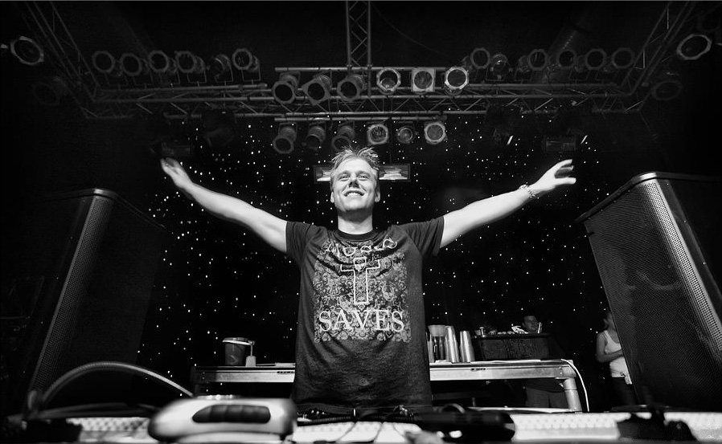

Армин ван Бюрен (нидерл. Armin van Buuren; род. 25 декабря 1976, Лейден, Нидерланды) - нидерландский музыкальный продюсер и диджей.
Является обладателем многих именитых наград, включая ТОП 100 DJ по версии DJ Magazine, профильных наград Trancepodium и других. Занимал первое место по фанатскому голосованию в DJ Magazine с 2007 по 2010 год, и 2012 году. В 2011, и с 2013 по 2019 занимал призовые места, и входил в ТОП 5 TOP 100 DJ. В 2013 году был номинирован на премию Грэмми за трек «This Is What It Feels Like», записанный вместе с Тревором Гатри, что его сделало четвертым музыкантом в стиле транс, который когда-либо был номинирован на престижную премию, и его ставит это в один ряд с Tiësto, Полом ван Дайком и BT.